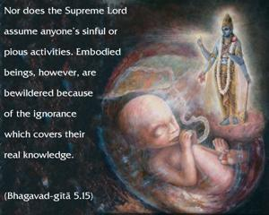
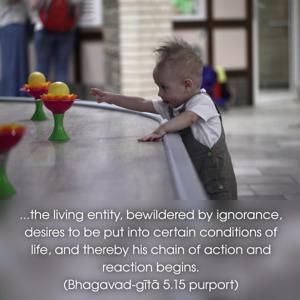
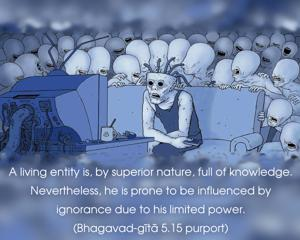

Nor does the Supreme Lord assume anyone’s sinful or pious activities. Embodied beings, however, are bewildered because of the ignorance which covers their real knowledge.



The Sanskrit word vibhu means the Supreme Lord who is full of unlimited knowledge, riches, strength, fame, beauty and renunciation. He is always satisfied in Himself, undisturbed by sinful or pious activities. He does not create a particular situation for any living entity, but the living entity, bewildered by ignorance, desires to be put into certain conditions of life, and thereby his chain of action and reaction begins. A living entity is, by superior nature, full of knowledge. Nevertheless, he is prone to be influenced by ignorance due to his limited power. The Lord is omnipotent, but the living entity is not. The Lord is vibhu, or omniscient, but the living entity is aṇu, or atomic. Because he is a living soul, he has the capacity to desire by his free will. Such desire is fulfilled only by the omnipotent Lord. And so, when the living entity is bewildered in his desires, the Lord allows him to fulfill those desires, but the Lord is never responsible for the actions and reactions of the particular situation which may be desired. Being in a bewildered condition, therefore, the embodied soul identifies himself with the circumstantial material body and becomes subjected to the temporary misery and happiness of life. The Lord is the constant companion of the living entity as Paramātmā, or the Supersoul, and therefore He can understand the desires of the individual soul, as one can smell the flavor of a flower by being near it. Desire is a subtle form of conditioning for the living entity. The Lord fulfills his desire as he deserves: Man proposes and God disposes. The individual is not, therefore, omnipotent in fulfilling his desires. The Lord, however, can fulfill all desires, and the Lord, being neutral to everyone, does not interfere with the desires of the minute independent living entities. However, when one desires Kṛṣṇa, the Lord takes special care and encourages one to desire in such a way that one can attain to Him and be eternally happy. The Vedic hymns therefore declare, eṣa u hy eva sādhu karma kārayati taṁ yam ebhyo lokebhya unninīṣate. eṣa u evāsādhu karma kārayati yam adho ninīṣate: “The Lord engages the living entity in pious activities so that he may be elevated. The Lord engages him in impious activities so that he may go to hell.” (Kauṣītakī Upaniṣad 3.8)
ajño jantur anīśo ’yam
ātmanaḥ sukha-duḥkhayoḥ
īśvara-prerito gacchet
svargaṁ vāśv abhram eva ca
“The living entity is completely dependent in his distress and happiness. By the will of the Supreme he can go to heaven or hell, as a cloud is driven by the air.”
Therefore the embodied soul, by his immemorial desire to avoid Kṛṣṇa consciousness, causes his own bewilderment. Consequently, although he is constitutionally eternal, blissful and cognizant, due to the littleness of his existence he forgets his constitutional position of service to the Lord and is thus entrapped by nescience. And, under the spell of ignorance, the living entity claims that the Lord is responsible for his conditional existence. The Vedānta-sūtras (2.1.34) also confirm this. Vaiṣamya-nairghṛṇye na sāpekṣatvāt tathā hi darśayati: “The Lord neither hates nor likes anyone, though He appears to.”